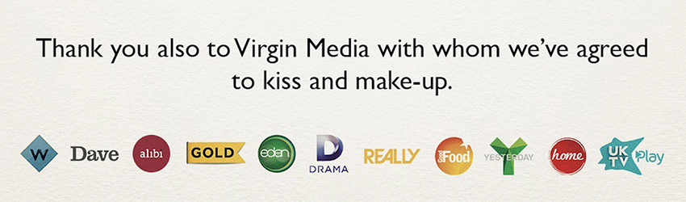

James and Wilkinson Media (JWM) are a UK based company that specialise in helping broadcasters to maximise their own promotional marketing whether it be TV, Digital, Radio or Social Media.
Since its formation in 2011 JWM have worked with broadcasters in over thirty countries, across five continents. Each market has its unique challenges and own culture; however, many similar issues exist in markets that undermine the effectiveness of its marketing activities. We thought that our findings may be of interest to people who operate in the broadcast world.
In this JWM Opinion piece we try to address the huge challenge that broadcasters are facing, namely that of formulating a successful business model, fit for purpose given the dramatic changes seen in audience consumption between live/linear and time-shifted/VOD viewing.
The size of the challenge that broadcasters face varies dramatically depending upon factors generally too many to mention; both broadcaster or market specific. As a business we are increasingly being asked to assist broadcasters in the task of helping to address the issue of changing viewing behaviour, though we do point out that that there is no one single solution to the issue. Indeed, as marketers, the answer in most cases is less about trying to promote live viewing to maximise share of viewing or commercial impacts but more about what platforms we can encourage audiences to consume our content on in the future. This may appear to be a defeatist attitude, and there are certainly tactics that can be employed to boost live viewing, however for this article I will be pragmatic and accept that the viewing trends we have seen will continue.
The recent FIFA World Cup brought back memories of an almost forgotten era in viewing figures, at least in the UK, as England teased the nation by reaching the semi-final for the first time in almost thirty years. In doing so they brought in live audiences of up to 25 Million. Sadly however, these events are too few and far between and the trend is increasingly towards time-shift viewing, with an increasing share of this outside of the linear stream into the VOD arena.
We all recognise how convenient it is for a viewer to watch content, whenever they may wish to, and generally on a whole host of different devices and platform. At a high-level, broadcasters fall into three categories:
It is this third group that the majority of broadcasters currently fall into and the one that I am going to focus on mostly in this piece. Although platform carriage fees also bring in revenue, it is doubtful for most channels whether this would be sufficient alone to maintain the viability of the business. In fact, there has recently been several very high-profile cases here in the UK, the most recent between Virgin Media and UKTV, where platforms and broadcasters have failed to reach financial agreement over supply and distribution. This in turn has led to the removal of channels from platforms. In these cases, there is no doubt that until such brinksmanship is resolved, all parties lose out including the one that is often overlooked, namely the viewer. This antagonism between supplier and distributer is perhaps symptomatic of the bigger issue at stake; who ‘owns’ the viewer? Is it the content broadcaster or the viewing platform? This last point is key, as more and more broadcasters rely upon aggregated platforms to deliver their Catch Up, VOD or Box Set content. Even for those larger broadcasters who do have their own independent digital hub, normally via desktop or mobile, they also rely upon the same aggregated content platform provider to deliver a significant amount of viewing to their non-linear output.
Whilst there will be a smorgasbord of individual broadcaster or even channel deals with the various platforms, based on viewing performance, delivery of commercial impacts, and maybe even customer appreciation, the one big obstacle that will increasingly become tougher and tougher to surmount, is that the platform, and not the broadcaster, is in total control of the ‘real estate’ and the environ that they deliver.
In essence this can mean the following:
Whilst branding, artwork and promotion will become ever more critical to secure in the future, it is the last point, no generation of advertising revenue, that appears to be hurting the market most, as historic channel/ platform deals do not reflect the change in consumer behaviour. In a nutshell, the channel is being under-remunerated for its content.
So how has this situation arisen? It is certainly not a new issue; however, it is one that has not really been addressed since the millennia, which has been the period of time that the problem has been allowed to fester. Whilst the 90s was the decade that digital development enabled both broadcasters and by default, their viewers to explore greater freedoms, the land-grab for distribution at all costs now appears to have been a little myopic. Platforms were launched and huge marketing budgets were spent on driving consumers to take up new non-linear services to watch content. This distribution drive went unabated and continues today, however, one thing that has failed to keep pace has been the ability of the actual broadcasters to monetise content on digital. Broadcast pay platforms have opened their doors to provide VOD outlets to all broadcasters, but very much on their own terms, often limiting and controlling both the marketing and the advertising levels around these services. So, because of this, content has struggled to be fully monetised as it traditionally has been; the very essence of commercial television.
Two further market developments have magnified the problem across this period. Firstly, the behemoths such as Google and Facebook have not only gained a significant share of peoples’ screen time at the expense of traditional broadcasters, but they have also significantly benefited from advertising revenues from these very same broadcasters! Second and more recent, we have seen the incredible take up in OTT subscription services; in particular, Netflix and Amazon. Their impact has been enormous on the market in many ways. Whilst few can argue that the huge investment they have made in original content has been highly positive for the production market and for the viewer, their presence has been of far less benefit to broadcasters. Not only have we seen a churn of subscription from some Pay TV platforms towards OTT services, hence reducing ‘eye-balls’ to content therefore reducing advertising revenue, but also the very fact that OTT services are generally free of advertising. This feature has tended to be appreciated by the viewer, which puts broadcasters into a predicament as to whether fixing the ad revenue issues that I highlighted above, is actually the correct path to tread. This is because it goes against the trend that the likes of Netflix have established and to which the public have responded so positively. In fact, one could argue that if this situation continues, one of the biggest losers will actually be advertisers themselves, as both ‘real -estate’ for advertising around content declines. Such a situation would no doubt force them to use social media hence reversing the slight retreat we have seen in the last 12 months, as major advertisers’ question both the measurement and the editorial sanctuary of such media, let alone its effectiveness.
So, a broadcast channel finds itself between a rock and a hard place; on one hand it needs to improve its capacity to take advertising revenue around its content, where-ever it is viewed, however, this is counter to the current direction of the market where aggregated VOD platforms are now competing against OTT services. This last point appears to be the real battleground. In this scenario, broadcast channels are mere foot soldiers; too reliant on both platforms and OTT services to deliver content, but too weak individually to gain the remuneration that they feel that they merit.
So where does that leave the traditional broadcaster, by which I mean the ones that we all know and watch? Although they still account for the great majority of viewing, how can their business models evolve to become future proof in this changing landscape? One solution could be in the rationalisation in the number of traditional TV channels. In the last couple of decades, portfolios have grown as broadcasters have taken advantage of the revolution in digital distribution and the creation of broadcast ‘vacuums’ as media freedoms have come about through political change. Perhaps nowhere more so than on our very own doorstep in Eastern Europe and those countries of the former Soviet Union. In addition, we have seen high levels of acquisition between broadcasting groups which has led to a ‘long tail’ of channels and content.
It appears that broadcasters can no longer rely upon carriage fees as a source of revenue for all each of their channels. Many channels actually appear surplus to the needs of all parties, often adding little to the appreciation of the platform to subscribers. In addition, these very same channels cannot survive solely upon commercial revenues as their audience delivery is both small and is often in decline.
The financials for each broadcast group by channel will vary, but a culling of channels may be one solution that we will see in the future. If this scenario was to happen, then I would envisage a relatively significant reduction in the number of linear TV channels, however as a counter balance to this, a strengthening of core brands within a portfolio, as their content offering is no longer diluted by the needs of former sister networks. In such a scenario, the cliché ‘Fewer, Bigger, Better’ would never be more apt. This process would or should not lead to reduced content choice for the consumer as VOD platforms can find a more appropriate home for ‘library’ content, categorised and easily navigable for all discerning viewers. The result in reducing the total number of channels, leaving portfolios of stronger channels would allow them to compete better for audiences and in doing so maximise commercial impacts. This in turn would satisfy advertisers hence increase commercial revenues and by default make the demand for increased carriage fees more justifiable.
Alongside the above action, channel brands which may have weakened over time due to portfolio dilution are allowed to shine through again resonating in what would be a far easier and more rewarding ‘on-demand’ arena, mirroring the linear scenario. Such a ‘quality over quantity’ approach could help to re-establish the power that channel brands once had and swing the negotiation back in their favour, or if this is too much to expect, then at least to level the playing field. Any economist will tell you that there is an elasticity of demand for every product or service and this is no different in the broadcast world whether that product is a platform, channel or even as granular as a programme. A resulting consequence of this approach would be greater broadcaster confidence in its ability to protect its own content, whichever platforms it gives or sells it to.
Finally returning to a point I raised as a shortfall earlier in this piece; almost as important in justifying maintained or increased levels of carriage fees will be the added power the broadcaster should obtain to successfully seek required levels of on- platform marketing, branding and data access which in turn can address the needs of their viewers, as opposed to solely the needs of the platform.
It may be an over-used quote, but never is the phrase ‘Content is King’ as relevant as it has ever been, nor as critically as important it is for broadcasters to employ the merits of that phrase.
Please feel free to give feedback on this Opinion piece. Should you be interested in finding out how JWM could possibly assist your broadcast organisation then please get in touch
Alan James, September 2018

“ The money I invested in JWM’s ARR service will deliver exponential savings for our business across the globe.”
Anna Priest, VP MarComms, A+E Networks UK (EMEA)
Follow us